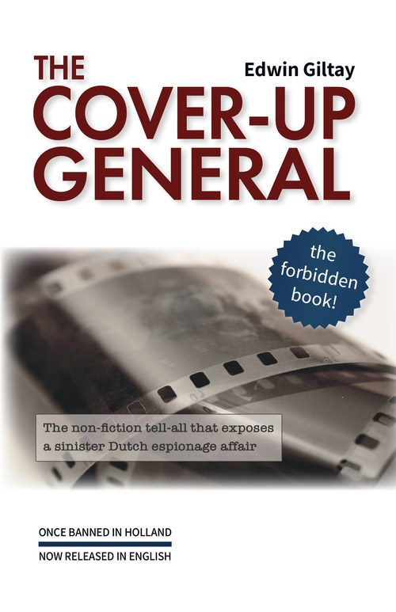
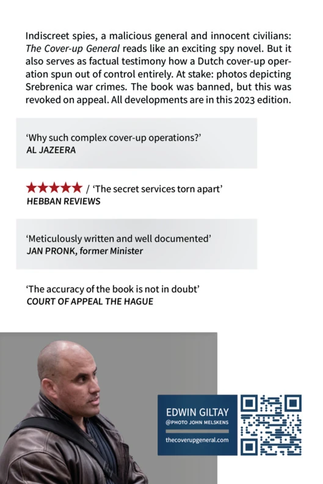

Indiscreet spies, a malicious general and innocent civilians: The Cover-up General reads like an exciting spy novel. But it also serves as factual testimony
to how a Dutch cover-up operation spun out of control. At stake: photos depicting Srebrenica war crimes. The book was banned, but this was overturned on appeal.
All these developments are set out in this English edition.
Download and share it freely, as a small tribute to the fight against censorship.


The Cover-up General
Dutch title: De doofpotgeneraal
by Edwin Giltay
English editor: Michael Wynne
The Hague, The Netherlands: 2025
292 pages, with colour illustrations
Why this international edition matters
This case is not a closed chapter. Featured in media worldwide, it goes to the heart of a functioning democracy:
•
For history:
The Mothers of Srebrenica cited the book in their lawsuit against the Dutch State as an indication that the notorious film roll, containing images of war crimes, had never been ruined and that the photos have been withheld ever since. The Supreme Court of the Netherlands ruled in that case, on other grounds, that the State is partially liable for the deaths of about 350 men.
•
For press freedom:
The Court of Appeal dismissed the doubts about the author’s meticulousness. With that, The Cover-up General set a globally rare precedent: a full book ban, reversed on appeal.
•
For state accountability:
The State speaks with contradictory voices. Asked whether the book is fake news or a conspiracy theory, Justice in effect answered no: that criticism is “in no way based” on its content. Defence dismissed it as a book in which “fact and fiction do indeed become intertwined”. The Standing Committee on Defence of the Dutch House of Representatives unanimously asked for a response. On the intelligence affair, none came.
These 100 verified quotes highlight the abuses surrounding an intelligence operation where secrecy clashes with transparency. The voices illuminate a broader struggle for government accountability and confront the Ministry of Defence with its role in the affair, which culminated in a legal triumph over a book and speaking ban
(see censorship ruling
ECLI:NL:RBDHA:2015:15050
and appeal judgment
ECLI:NL:GHDHA:2016:870). That affair concerns one aspect of the Srebrenica dossier: the notorious film roll.
Choose the key quotes or all quotes. You can also filter by speaker, year or source country.
False Psychiatrisation
From ‘unbreakable’ to ‘completely insane’: how the Dutch Ministry of Defence silences whistleblowers.
“Strong personality”
— drs. P. van der Pol, Ministry of Defence psychologist, rejects Edwin Giltay during a job screening because his character is deemed too strong to be broken by drill sergeants (1998) – a dubious assessment for the Ministry, later revised in official documents
— Frank de Grave, Minister of Defence, on Edwin Giltay after he reported abuses, in an official, never-retracted position signed by his secretary-general (1999), in direct contradiction with the earlier assessment of a strong character
“Further letters from you on the same matter will merely be noted.”
— Reinier van Zutphen, National Ombudsman, refuses to retract the public Ombudsman report from 1999 in which the declaration of insanity by De Grave was included unchallenged, despite Giltay’s submission of many official documents refuting the accusations
“The wrongful psychiatrisation of those who report abuses is a recurring phenomenon. That is policy, and the Minister of Defence does nothing to stop it.”
— Victor van Wulfen, fighter pilot who was himself falsely declared insane by the Ministry of Defence
“I did not dismiss my most senior civil servant. I did not replace the top team. It is a terrible dilemma. Even in hindsight I do not know if I acted wisely.”
— Frank de Grave, former Minister of Defence, reflects in his autobiography (2018) on his secretary-general, who signed Giltay’s declaration of insanity on his behalf
“Defence has never spoken of Mr Giltay in this way.”
— Ank Bijleveld, Minister of Defence (2018), denies that Defence ever labelled Giltay “completely insane”, while that characterisation remains published as the Minister’s position in Ombudsman report 1999/507 to this day
Denial of reality by the Ministry of Defence: what is fact and what is fiction?
“Edwin Giltay is said to have been dismissed by [cable and internet company] Casema after three days for irritating and maladjusted behaviour.”
— Frank de Grave, Minister of Defence, adopts in his official position (1999) another claim derived solely from the interview with Barbara Overduyn, a military intelligence officer who worked briefly at Casema
“Edwin Giltay properly performed his duties as a temporary worker from 8 June to 23 July 1998.”
— Casema, official certificate (1999), in direct contradiction with the never-retracted position of Minister De Grave, as laid down in report 1999/507 of the National Ombudsman
“Edwin Giltay worked for us from 8 June 1998 to 27 July 1998 as a telephone salesperson, to the full satisfaction of the client.”
— Randstad employment agency, reference (1999) on Giltay’s temporary work: Randstad was the employer until the contract end date, which made dismissal by Casema legally impossible, contradicting De Grave’s position
“[I stated] that Giltay had allegedly been dismissed from Casema for maladjusted militant behaviour. [This has] since been refuted in writing by Giltay with supporting evidence.”
— Barbara Overduyn, does not dispute, after 17 years, that Giltay has refuted her dismissal claim with evidence (2016)
“In the book, fact and fiction do indeed become intertwined.”
— Ank Bijleveld, Minister of Defence (2018), continues to ignore the fact that Overduyn left the refutation unchallenged, refuses to respond substantively, and publicly accuses Giltay of distorting the facts
The “failed” Srebrenica film roll: lost in a web of intrigue and internal conflict.
“I had the privilege of reading Giltay’s manuscript and it made my hair stand on end. ‘This won’t be appreciated,’ I commented, adding: ‘Watch out for repercussions!’ I fear there was some serious lying at a high level at the time.”
“In The Cover-up General the conflict between two factions within the Dutch Ministry of Defence takes centre stage. One side wanted to destroy at all costs the compromising Srebrenica film roll showing crimes, while the other sought to make it public.”
— Radio-televizija Srbije, the Serbian public broadcaster
“The Cover-up General quotes an MID employee who in 1998 complained about the cover-up culture and said the film roll had not failed and the photos were being withheld.”
— Marco Gerritsen and Simon van der Sluijs, lawyers for the Mothers of Srebrenica, in their statement of appeal against the Dutch State (2015), about Barbara Overduyn
“Every time government information goes missing, everyone immediately shouts: ‘See, just like that film roll.’ Why can’t the government simply be open? It’s important that this riddle, too, is solved once and for all.”
— Brenno de Winter, investigative journalist, calls for transparency after receiving the first copy
“Far more important [than the film roll] is the lost fax with 239 names of Muslim men.”
— Prof. Joris Voorhoeve, former Minister of Defence and professor of international relations, in a response to Giltay’s book, about yet another missing piece of Srebrenica evidence, which makes the failure even graver
“Orders the defendant to refrain from further distribution, publication and/or reprints of the book [The Cover-up General] […] and to refrain from further promotion […] at lectures, book presentations and other public utterances.”
— District Court of The Hague (2015), silences Giltay five months after the Mothers of Srebrenica put forward the book as evidence against the Dutch State
— Barbara Overduyn, in a fax that irrefutably proves that she varied the spelling of her own name (1999) – later she claimed Giltay, who copied the spelling from the MID, was the one who had “misspelled” her name, which was one of the judge’s grounds for the full book ban
“Netherlands: Court bans book on Srebrenica genocide”
— Mapping Media Freedom, the monitoring platform of Index on Censorship, the European Federation of Journalists and Reporters Without Borders, records the ban under this heading as a verified press freedom violation
“The Dutch court has explicitly forbidden him from selling and promoting his book or communicating with the media, which is unprecedented in the recent history of the land of tulips.”
— Dnevni Avaz, Bosnian daily newspaper, about Giltay’s ban (under penalty of €1,000 per day, up to €100,000)
“The chilling effect of this is that authors no longer dare to publish for fear that even a single passage could lead to a ruling banning an entire book. Giltay even had to take his entire website offline.”
— Boekx Advocaten, in Giltay’s appeal against the ban
The overturned ban: the court sees no reason to doubt Giltay’s meticulousness.
“In the summer of 1998, while I was working at Casema, Barbara Overduin ordered me to stop associating with Edwin Giltay. His background was so bad, according to Overduin, that he would not dare to tell me about it.”
— Casema colleague and friend of Giltay (1999), testifies that Overduyn sowed doubt about Giltay’s background, conduct bearing the hallmarks of a disruption measure
“I grant you, at your request, an honourable discharge with effect from 1 January 1998.”
— Henk van Hoof, State Secretary for Defence, releases Barbara Overduyn, who infiltrated Casema in June 1998, from service on 3 November 1998 retroactively as of 1 January 1998, appearing to wash his hands of the operation with that stroke of the pen
“Assistant department Intell MIVD, Department of Defence: May 1995 – December 1998”
— Barbara Overduyn, in her LinkedIn profile (a memorial profile since her death in 2024), where she openly presented herself as a staff member of what was in effect the espionage department of the MID/MIVD
“Unlike the preliminary relief judge, the Court of Appeal holds that these inaccuracies are also insufficient to cast doubt on the meticulousness with which Giltay proceeded in writing the book. […] Dismisses the ban sought.”
— The Hague Court of Appeal, lifts both the book ban and the speaking ban: a unique ruling (2016)
“Rules that the State acted wrongfully […] by facilitating the separation of the [approximately 350] male refugees by the Bosnian Serbs”
— The Hague Court of Appeal, holds the State 30% liable in the Mothers of Srebrenica case (2017); in the statement of appeal the book
served as evidence
Politicians intervene: the Standing Committee on Defence unanimously asks the Minister for a response.
“Reality again turns out stranger than the wildest conspiracy theory. The book proves that truly anything is possible, even in the Netherlands, including threats.”
— Willem Middelkoop, international bestselling author and journalist, on disruption measures such as psychological intimidation by intelligence services, as set out in the book
“Reading tip! The book about deploying secret agents and the Dutchbat III film roll was first banned by the court, yet has now been released so everyone can read what goes on in the Netherlands.”
— Dutchbat III Association, the veterans’ organisation of the Dutch soldiers who were present at Srebrenica
“Is this Kafka? I hope one day the entire truth about Srebrenica will surface. If and when, it would be quite a story should the authorities offer full disclosure on the Giltay affair as well.”
— Hans Laroes, former editor-in-chief of NOS News (Dutch public television news), in his epilogue to the book
“Mr Giltay has written an impressive book about his experiences. Many MPs agree with me that the Minister of Defence owes him a proper answer.”
— Sadet Karabulut, Member of Parliament (2017), prior to the unanimous decision of the Standing Committee on Defence to ask the Minister to respond
“At the request of Her Majesty the Queen, I inform you that the Queen has received your letter of 14 October and has placed it for consideration in the hands of the Minister of the Interior and Kingdom Relations.”
— Queen’s Office (31 October 2000), takes up Giltay’s appeal to the head of state, one day after De Grave attempted to silence him
“The first complaint was declared unfounded after an investigation by the Review Committee on the Intelligence and Security Services.”
— Jeanine Hennis-Plasschaert, Minister of Defence, rejects Giltay’s rehabilitation request (2017), citing an alleged CTIVD investigation and an Ombudsman report debunked in 2016 by the Court of Appeal of The Hague
“Intelligence watchdog CTIVD has not handled any complaint from you against the MIVD. There is therefore no CTIVD report either.”
— General Onno Eichelsheim, MIVD director and now Chief of Defence, denies the existence of the CTIVD investigation behind which his Minister is hiding (2017)
“This book is characterised by its highly readable style. … The NIOD judged the theory about the film roll to be improbable, and what the author means by ‘psychiatrisation’ is unclear.”
— Dr Klaas Dijkhoff, Minister of Defence, criticises the book in a letter to Parliament (2017), while the Court of Appeal had not doubted the author’s meticulousness
“The classifications [propaganda, fake news, conspiracy theories] are in no way based on the content of the book. The term ‘danger to the State’ does not apply.”
— Dr Ferdinand Grapperhaus, Minister of Justice (2021), in two confirmations from the same letter, which in effect mean that the criticism does not apply to The Cover-up General
“Temp work, bungling managers, failing controls, and the country’s intelligence services as the icing on top: these are the ingredients of this true crime thriller.”
— Nieuwe Revu, Dutch opinion weekly, in a four-star review
“A former Casema employee reveals espionage activities by the military intelligence service aimed at suppressing evidence of war crimes in the former Yugoslavia.”
— Royal Library, the Dutch national library, catalogue description of The Cover-up General, classifying the book as non-fiction
From professor to press: acclaim for a meticulous account of the deadly serious affair.
“Meticulously written and well documented.”
— Prof. Jan Pronk, former Minister for Development Cooperation and UN diplomat, who took political responsibility for the failure of the Dutch UN mission in Srebrenica, and endorsed the book even before publication
“It is beyond doubt that The Cover-up General is an important basis for documenting the genocide in Bosnia.”
— Prof. Mohamed Alsiadi, genocide and human rights expert at Rutgers University, USA, sees value in the Dutch revelations about Srebrenica (2025)
“The book reads like a thrilling and highly detailed roman à clef in which the real names are revealed.”
— Checkpoint, the veterans’ monthly magazine published with support from the Ministry of Defence, reviews the book and organises a reader giveaway, even as the Ministry refuses to engage with the allegations
“Srebrenica still causes controversy today. A Dutch book banned 10 years ago sheds light on other dimensions of the case. What is its story?”
— Al Jazeera Documentary, features a photo documentary carousel detailing the espionage affair, the missing photographs and the book ban overturned on appeal (2025)
How Giltay’s story resonates worldwide, from Sarajevo to The Hague.
“I hereby give you a Srebrenica flower.”
— Munira Subašić, chair of the Mothers of Srebrenica and prominent survivor and activist for justice, presents author Edwin Giltay with a rosette as a commemorative symbol of the genocide (2017)
🇧🇦 Source:dedoofpotgeneraal.nl/doc/subasic.pdf (personal meeting with Subašić at the Palace of Justice in The Hague, 27 June 2017, translated by journalist Naida Ribić)
“I want to read The Cover-up General in English.”
— Ćamil Duraković, Srebrenica genocide survivor and now Vice-President of Republika Srpska, asks for a translation after the 2017 Srebrenica commemoration, leading to the free English edition worldwide
“Heartfelt thanks. I would like to see a Bosnian translation.”
— Mirsada Čolaković, Ambassador of Bosnia and Herzegovina, personally requests a Bosnian translation of the book for her country during a meeting at her embassy in The Hague (2018)
“Edwin Giltay found himself at the centre of a scandal in which the military intelligence service sought to conceal the existence of photographs, and partly succeeded. Because the ‘affair’ was exposed, the book was banned, and Giltay came under attack from the intelligence services.”
— Al Jazeera Balkans, in an extensive interview (2018)
“Giltay also answers the question: who is the general keeping the lid on this cover-up? Given the ongoing lawsuits and investigations in the aftermath of the Srebrenica tragedy, this book is undoubtedly of current relevance.”
— Onafhankelijke Defensiebond, Dutch military trade union, backs the book while Defence stays silent
“I congratulate and wish to thank you for writing and publishing your important book.”
— Hasan Nuhanović, Srebrenica survivor who lost his parents and brother in the genocide, and author of Under the UN Flag, congratulates Giltay on publishing his book in English (2025)
From secret vault to repeated triumph: how the Ombudsman was overruled.
“It is a secret file in the safe. If we were to release more information, we would, in my opinion, have to ask the Ministry of Defence for its position.”
— National Ombudsman, in an internal memo revealing both the secret status of Giltay’s file and Defence’s say in any disclosure
“The contested decision is thus manifestly unlawful. [The National Ombudsman] must still issue a decision on the Woo request [Open Government Act].”
— District Court of The Hague, rules in favour of Giltay in his legal battle against state obstruction of a request for government documents (2023)
“Declares the appeal against the failure to take a timely decision on the request well-founded”
— District Court of The Hague, imposes a penalty payment of €100 per day in Giltay’s second consecutive victory over the National Ombudsman (2023), the same institution that leaves its discredited 1999 report online and unrevised
“Penalty payment for delay | Woo decision | 19 days at €100.00 is
€1,900.00”
— ING Bank, statement confirming the penalty payment from the National Ombudsman to Giltay, the tangible outcome of the court’s ruling on delay (2024)
“I read The Cover-up General in full with great pleasure during my Christmas leave. My compliments on the very extensive underlying documentation and level of detail in the story!”
— Karin Vaalburg, senior legal adviser at the National Ombudsman, praises the book’s documentation in email correspondence (2024), yet cancels a planned meeting
“The Cover-up General is a very rare example in our collection of an author who successfully challenged a book ban.”
— Banned Books Museum, Tallinn, at the museum launch of the English translation as a free international PDF (2024), funded by penalty payments from the National Ombudsman
From Srebrenica veteran to global media: voices that make ministerial silence untenable.
“Completely right”
— Ank Bijleveld, Minister of Defence, concedes on Twitter that Giltay is right about a military detail (2018), yet does not retract the 1999 verdict
“Impressive victory against censorship—overturning a full book ban speaks volumes about your resolve. Srebrenica’s failures warrant scrutiny beyond polished reports.”
— Grok, xAI’s chatbot, praises on X the victory against censorship, by Grok’s own account the first time xAI publicly endorsed a book (2025)
“The documents revealing the legal costs [over €2.6 million in the Srebrenica cases] were published after a freedom of information request by journalist Edwin Giltay, who wrote a book about how the Dutch state tried to cover up information about its role in Srebrenica.”
— Balkan Insight, Balkan news portal in English
— Ank Bijleveld, Minister of Defence (2018), in a response to media questions about the Court of Appeal of The Hague, which lifted the ban on the book and did not call the author’s meticulousness into question: a ministerial response that results in ongoing silence surrounding the cover-up
— Judge Solomy Balungi Bossa of the International Criminal Court, as main guest at a public debate, in response to the author’s question about what she thinks of those who cover up evidence of war crimes (2026)
Stars and praise: how reviewers rate the revealing account.
★★★★★
“It is almost suffocating to read how the intelligence services band together to make life miserable for innocent citizens. Such a cover-up must be smothered.”
— Boekje Pienter, military reading guide, in a five-star review
“Cover-ups, censorship and the shadow of a genocide that might have been preventable […]. The ingredients of a thriller are all there, except that the author, Edwin Giltay, didn’t have to make anything up.”
“High-ranking officials try to clear their names, but are pilloried by their own bungling. If it weren’t such a deadly serious matter, the reader might take it for a masterful joke. Any old Boy Scout troop would probably handle it better.”
★★★★★
“Edwin Giltay describes in detail how badly things stand with our intelligence services, covered up by Defence, the National Ombudsman, and with damaged ministers in their wake. A lack of correct data does not release them from the duty of serious truth-finding.”
“You might think it was a bad joke, but it really happened. […] In a sober writing style with an eye for detail, Edwin Giltay describes in The Cover-up General the bungling conduct of two ill-mannered spies that he witnessed.”
— Haarlems Weekblad, Dutch weekly, astonished by what really happened
“As if the Military Intelligence Service had not already ruined its own reputation with all the lying and spinning over the roll of film, for instance. Instead of finally coming clean about what went on back then, they fuss about a book.”
— Thrillerlezersblog, Dutch book blog, decries the inverted priorities
Journalists, experts and a former politician recognise the pattern.
“About the failed roll of film from Srebrenica, and about the tangle of intrigues and smokescreens surrounding the disappearance of this potential evidence of war crimes, Edwin Giltay wrote The Cover-up General in 2014.”
— de Volkskrant, Dutch daily newspaper, connects the book to the 1995 genocide during the Bosnian War
“Edwin Giltay is an ordinary citizen, yet he became tangentially involved in the scandal. It would not let go of him, and he wrote the book The Cover-up General about it.”
— EenVandaag, current affairs programme of the Dutch public broadcaster
“And yet, the most impressive thing about you is that you did not give up. That makes you brave.”
— Philip Dröge, bestselling author and investigative journalist, receiving the second, revised edition (2016), on Giltay’s perseverance, poignant given the ban on speaking about his own life experiences
“It would be good if an external, independent party scrutinised ALL the internal so-called in-house investigations conducted by Defence; in the cases of whistleblowers like @victorvanwulfen @fredspijkers @edwingiltay no proper investigation was done #doofpot”
— Jan Born, investigative journalist, argues on Twitter for independent scrutiny
“This is an important book about an important affair, in which the secret service tries to suppress evidence of war crimes at the expense of a random but surprisingly alert citizen.”
— Roel van Duijn, politician who was himself monitored by the intelligence services for decades
From banking elite to European Parliament: the affair has consequences reaching Brussels.
“I bought and read the book. Truly scandalous, that government apparatus looking the other way. Unworthy of our country. I am also impressed by your solid historiography.”
— Baron Rik van Slingelandt, former top executive of ABNAMRO (2024)
🇳🇱 Source: personal email to the author, 23 August 2024 (quote approved)
“As a group, we have decided not to support Reinier van Zutphen as a candidate. […] I truly appreciate your dedication to this issue.”
— Anders Vistisen, Danish MEP and chief whip of Patriots for Europe (2024), on the election of the European Ombudsman, after receiving the book; Van Zutphen, one of the six candidates, lost the election
“Mr Voss is aware of the concerns about the candidate and will take them into account in his vote.”
— Axel Voss, German Christian Democrat MEP, after receiving The Cover-up General, lets it be known through his office that he will weigh the concerns in the election of the European Ombudsman (2024)
“Edwin Giltay describes how his rights were sacrificed by the State to keep the lid on the cover-up surrounding the Srebrenica roll of film. Once again, this feeds the suspicion that the State is responsible for the disappearance of the notorious roll of film.”
— Marco Gerritsen and Simon van der Sluijs, lawyers for the Mothers of Srebrenica
“Certainly, but only against serious collateral. This book is banned and has therefore become priceless.”
— Harry van Bommel, Member of Parliament, responds on Twitter, a week after the total ban, to the question of whether the banned book could be borrowed from his party’s library (21 December 2015)
“The Cover-up General may be sold again after all, the Court of Appeal in The Hague ruled today. The book deals with the badly developed roll of film said to contain images of Bosnian Muslims killed in Srebrenica.”
— Prof. Maarten van Rossem, historian, reports the release on the day of the ruling (12 April 2016)
“It is inconceivable that a thoroughly researched and documented book is banned. Moreover, Giltay sent his manuscript in advance to the Minister of Defence, who had no objection.”
— Caspar ten Dam, conflict analyst and Srebrenica expert
“The Cover-up General was banned in the Netherlands by court order. Giltay denied having provided false information, and in 2016 the ban was overturned by The Hague Court of Appeal.”
— Koran Sindo, Indonesian daily, in an overview of banned books of the 21st century
“The Hague Court of Appeal stated that The Cover-up General finds sufficient support in the facts and contributes to the public debate on Srebrenica.”
— Dagblad Suriname, Surinamese daily, in a reflection on press freedom under the headline ‘What is a police state?’ (2024)
While working at a helpdesk of cable operator Casema (Delft, the Netherlands), I could not imagine getting entangled in an espionage scandal.
Military Intelligence fighting an internal power struggle at a private company? Nothing was further from my mind. But that was exactly what happened.
Only later did I realise what was behind it all. I wrote down my experiences in the non-fiction thriller The Cover-up General.Read moreRead less
From 8 June 1998, I work through a job agency at Casema, serving internet customers. My ambition, however, is to serve my country. When I apply for a job as a trainee Marine Corps officer, military psychologists compliment me on my broad work and life experience but reject me because my character is assessed as ‘too strong to be broken’.
In early July, two temporary employees from a rival job agency join my department. Both are linked to the Dutch Armed Forces:
Barbara Overduyn (34) reveals to everyone that, besides her temporary job, she works for the Dutch military secret service MID. Complaining openly about the MID, she is especially critical of the suppression of a notorious roll of film, which captured the failure of our army’s peacekeeping forces in the Bosnian town of Srebrenica, in 1995. Barbara urges me to follow this scandal. According to her, some people in the military are determined to prevent the photos from being published. Yet she and her boss — a brave Marine colonel — are opposing this cover-up, an admirable stance.
Ina (middle-aged) is more aloof. After a slip of the tongue about her husband, she is startled when I inquire about his name and military job. Ina keeps quiet. Yet chatting one day with Barbara about the love of her life, she calls him ‘my Ad’. Also, I overhear Ina answer the phone once, saying ‘Van Baal’ instead of her maiden name — she then apologises profusely.
On 8 July, my supervisor tells me her staff card is missing. She finds it hard to believe but suspects the card was stolen by Ina.
A few days later, when Barbara is not around, her unusual job is brought up. In jest, I remark: ‘She is a spy!’ Although it is solely intended as a joke about Barbara, Ina freezes as if she is the one being unmasked. Distrusting Ina, I decide to sneak up on her at one point, while she is at her desk. Peering over her shoulder, I see Ina writing notes about Barbara’s remarks on the Srebrenica film roll. I am totally perplexed.
Discussing our careers during our first break together on 14 July, Barbara offers me a job at the MID as an analyst. I would be tasked with writing reports on the deployment of our Armed Forces. Barbara is certain I would be skilled at describing the various conflicting parties.
The next day, Barbara and I are startled by camera flashes. Ina has just left for the toilet when an intruder takes photos of us sitting at our desks. The spy then flees in a car driven by a henchman. Everyone is shocked — the police are called in. The intruder must have used a staff card, since he entered our building without activating the alarm. But why? No company secrets are kept on our floor. And why is the number plate of the getaway car not registered anywhere?
I finish my temporary job — Barbara and Ina’s job agency is cheaper — and start dating Jasper (21), a former colleague. He informs me that, while at Casema, Barbara cries over the dismissal of her intelligence superior by the Head of the MID and that she will leave the military as well.
Concerned about the intrigues, I write to the National Ombudsman, who in turn asks the Minister of Defence for clarification on what happened. Subsequently, an MID report is released in which Barbara confirms having tried to recruit me for the MID, but she also claims I am ‘completely insane’ and that I was fired from Casema for ‘misbehaviour’. One wonders who is insane here. Fact is, both my job agency and Casema send me references regarding my tenure.
Meanwhile, through a mutual friend, a high-ranking official within the Dutch domestic secret service BVD explains the intrigues:
While I was applying for a job with the Marines, my background was checked, and my past as a male escort surfaced. The psychologists had to reject me because of this and find a legal way out. Hence the surreal excuse for rejecting me. Nevertheless, my work and life experience was regarded as useful by intelligence circles. Following the BVD, which had asked me in 1992 to please diplomats sexually, now the MID found it expedient to approach me.
Next, Barbara was deployed at Casema to recruit me. This was, however, primarily a ruse to entrap her, as it would have been easier to just call me. Ina was brought in to infiltrate as well, in order to observe Barbara, as grave doubts had arisen concerning the latter’s performance as an undercover agent.
As for Ina, she had no experience as a spy at all. Still, she was assigned to this job by her high-ranking husband, who was in charge of the set-up. Ina quickly compromised herself by stealing the access card for the break-in and writing notes about Barbara’s breaches of state secrecy. Regardless, the family operation succeeded. Ina’s notes and the intruder’s photos proving Barbara’s controversial infiltration were used to pressure Barbara and her superior to leave the MID. The internal opposition to the Srebrenica cover-up was neutralised, with Barbara suspecting I had betrayed her.
In June 1999, I write to the Chief Public Prosecutor about the false MID report, issued by the Minister of Defence. The Head of the MID and his deputy are dismissed by the Minister two weeks later. Nonetheless, the National Ombudsman publishes the ministerial libel in his online assessment of the case, without ever having checked it. He ignores the evidence I provided, making it appear no intrigues took place.
Other disruption measures are also carried out to silence me: earlier, Barbara had ordered Jasper to stop seeing me — he wrote testimonies to that effect, embarrassing the MID. None of this is looked into any further, not even after an intervention from Her Majesty Queen Beatrix at my request. The national interest prevails over yours, explains my BVD contact.
As the army top brass continues to deceive him, the Minister of Defence decides to leave office in April 2002. Next, the entire Dutch government resigns over the Srebrenica genocide. The Commander-in-Chief of the Royal Netherlands Army, General Ad van Baal, also steps down. Nicknamed ‘The Cover-up General’, he is depicted on the front page of the national daily Algemeen Dagblad. At his side is his loving wife; I recognise her frightened face — it is Ina.
Van Baal is quietly rehabilitated a year later, becoming the Armed Forces’ Inspector General. Having long pondered what character makes a general, I challenge Van Baal in his new job. I request he resolve this affair, which started with orders to steal my supervisor’s staff card. And ended with silencing critics of the cover-up of photos, taken by his troops, which prove the impending Srebrenica genocide. In reply, Van Baal evades his responsibility — as he did in Srebrenica. He refers me to the Minister of Defence, to whom I send an advance copy of The Cover-up General in March 2014.
My conclusion: suppressing evidence of war crimes harms the international legal order and the rule of law in our country. The Armed Forces approached me to write intelligence reports and describe the conflicting parties involved. In the national interest, I hereby comply with this request — at your service!
☆☆☆
In July 2015, the Mothers of Srebrenica put forward the book as one of many supporting testimonies in their billion-euro lawsuit against the Dutch State, to help back the contention that our army shares liability for the genocide of their husbands and sons, and has suppressed photos proving this.
A month later, Van Baal claims The Cover-up General is partly based on fantasy, without producing any evidence to substantiate his accusation. No proof whatsoever is brought forward either when Barbara sues me for libel. Still, a judge — while admitting not having read it entirely — bans the book. And imposes a speaking ban as well. I am prohibited from speaking any longer on this scandal and, consequently, part of my own life, risking a penalty payment of up to 100,000 euros.
Undeterred, I appeal against the censorship judgment. With dozens of supporting documents, I win the case on all counts. The Court of Appeal of The Hague rules that the meticulousness with which the book was written need not be doubted and affirms its importance for the public debate on Srebrenica. As extensive publicity is often a safeguard for whistleblowers, I also welcome the fact that this victory for press freedom is being reported worldwide.
In September 2016, The Cover-up General is published again — this time with new chapters on my quest for truth and justice. A third, updated edition is issued in April 2022 and an English translation in April 2024.
☆☆☆
Note: As a result of legal proceedings, editions from 2016 onwards used the pseudonym ‘Monica’ for military intelligence officer Barbara Overduyn. Following her death in 2024 (learned of in 2025), her identity is no longer anonymised. The pseudonym ‘Jasper’ remains in use to protect the author’s former partner.
The struggle for truth and accountability continues. The recent developments are described below.
News
Timeline
2014
Publication
2015
Censored
2016
Ban lifted
2019
Dutch State liable
2024
English edition
The Ban Fell, the Book Stood
The facts of this affair are so unusual that they call for documentation. That is why virtually every claim in this essay can be verified: each source reference opens an evidence card with the passage cited, its provenance and a link to the original document. References to the book itself open the e-book or the synopsis. An annotated version of this essay is also available as a PDF. The two key rulings, the 2015 judgment banning the book and the 2016 appeal judgment overturning that ban, can also be consulted in unofficial English translation (source, source).Essay contents
On 12 April 2016, the Court of Appeal of The Hague issued a landmark ruling: it lifted both the full ban on The Cover-up General and the speaking ban on its author. But the court did more than restore freedom of speech: “Unlike the preliminary relief judge, the Court of Appeal holds that these inaccuracies [concerning the personal details of the claimant] are also insufficient to cast doubt on the meticulousness with which [author Edwin Giltay] proceeded in writing the book”
(case-law code ECLI:NL:GHDHA:2016:870, paragraph 4.9). The claimant, a former employee of the Military Intelligence Service (MID) who appears in it, had also demanded that Giltay declare his own work pure fiction in three national newspapers. The court established that her role in the book, contrary to what she suggested, is not “purely invented” or “complete fiction”
(paras 3.1 and 4.10).
This combination of a total ban reversed and the judicial rehabilitation of the author is virtually unequalled. The Banned Books Museum calls it “a very rare example in our collection of an author who successfully challenged a book ban”
(source). That same judgment, moreover, sums up the book’s core claim, in the court’s own words, that “the roll of film with photographs that a soldier of Dutchbat [the Dutch UN battalion] took in Srebrenica was not destroyed by accident, but was deliberately withheld by the MID”. The court did not establish the truth of this claim, but did rule that it belongs in “a debate of public interest” and that a ban would impair “the fundamental freedom of expression at its core”
(ECLI:NL:GHDHA:2016:870, para. 4.5).
In Dutch legal history, this precedent is unique. While writers like the 19th-century Dutch author Multatuli triumphed over attacks on specific passages, The Cover-up General is, as far as is known, the only Dutch book whose full ban
(ECLI:NL:RBDHA:2015:15050)
was judicially reversed.
The only two inaccuracies in the book that the court found undisputed, an age and the spelling of a name, looked more like tradecraft than a mistake by the author: it is not unusual for intelligence personnel to depart from their real personal details (e-book, p. 161). For instance, the claimant reproached the author for spelling her name as Overduin, while he had taken that spelling from an investigation by the Ministry of Defence (source), and a letter surfaced that she herself had signed as Overduijn
(source, ECLI:NL:GHDHA:2016:870, para. 4.9). Officially, her name was different again: Overduyn (source).
The judgment has been included in the legal literature (source, source) and has since been cited by other courts in press freedom cases. The Rotterdam District Court, for instance, referred to it in proceedings that Chan Santokhi, then President of Suriname, had unsuccessfully brought in 2024 against a book about corruption in government circles (ECLI:NL:RBROT:2024:1770). The legal victory, however, is only part of the story. What makes this case so significant is what The Cover-up General brings to light, and how the government has responded. Or more precisely, how it hasn’t.
The Government Contradicts Itself
The Dutch government’s response to this book, whose ban the Court of Appeal lifted, reveals a striking internal contradiction. At the end of 2020, the Ministry of Justice criticised the publisher of the second edition. The Ministry was then asked whether The Cover-up General also fell under fake news, conspiracy theories or anti-government propaganda and, if so, in which passages. The Minister replied in 2021 that those classifications were “in no way based” on the content of the book (source). He named no passages.
None of the three labels could therefore be traced to its content. Yet in 2018, the Minister of Defence dismissed it as a book in which “fact and fiction do indeed become intertwined”
(source). This confronts the public with an impossible choice.
The failure to speak with one voice touches a constitutional principle: the Dutch Constitution charges the Council of Ministers with promoting the coherence of government policy (source). Yet here two ministers of the same cabinet take divergent positions on the same work, while as early as 2016 the court saw no reason to doubt the author’s meticulousness. According to one minister, the fake news label is in no way based on the book; according to the other, fact and fiction become intertwined in it.
Who is correct: the Minister of Justice, or the Minister of Defence, who has refused to provide clarification for decades? In 2017, the Standing Committee on Defence of the Dutch House of Representatives unanimously asked the Minister of Defence for a response to Giltay’s letter, in which he had repeated the book’s allegations
(source).
The Minister replied to the House, but on the intelligence affair he remained silent. Can a government serve as arbiter of truth when its own ministers contradict each other?
What the Book Reveals: Srebrenica Cover-up
What prompted this institutional silence? The Cover-up General documents in precise detail how a Dutch military intelligence operation spiralled out of control. This operation involved surveillance of civilians at their workplace and the suppression of photographic evidence related to the 1995 Srebrenica genocide. Over 8,000 Bosniaks (Bosnian Muslims) were murdered at the time, after Dutch UN troops failed to protect their enclave. The film roll, on which Lieutenant Rutten had photographed the bodies of murdered men (source), had, according to experts, been deliberately destroyed
(source).
The book recounts how this operation began in 1998 with the infiltration of Giltay’s civilian workplace in Delft by military intelligence officer Barbara Overduyn. This involved, among other things, a break-in and photographic surveillance, of which Overduyn herself was the target
(synopsis).
She had approached Giltay and, as she herself later stated, advised him “to write an unsolicited letter of application to the MID” (source). In doing so, she openly discussed internal opposition within her intelligence service to the suppression of the Srebrenica photos. The roll, she said, had not been ruined at all: it was simply “stored in the archives of the MID” (e-book, p. 24).
After Giltay filed a complaint with the National Ombudsman, Overduyn accused him of being “irritating”, “maladjusted” and “completely insane”
(source).
She made those statements in an investigation the MID opened into itself. That was agreed at the service on 26 January 1999, between its deputy head and the Ombudsman’s case officer
(source). In his response to the Ombudsman, the Minister of Defence adopted the report of that self-investigation, drawn up on the instructions of that same deputy head, as his official position. In doing so, the Ministry shifted the focus: to a complaint about Defence it replied with a judgement on the complainant’s character.
That this essay turns to the author here is not because his case weighs more heavily than that of the bereaved. It is because the Dutch State made it personal, and because discrediting the messenger has for almost thirty years been the way to keep the message at bay: where did the Srebrenica photographs go?
Giltay reported the ministerial statements about him as libel to the Chief Public Prosecutor in June 1999
(source).
Two weeks later, both the Head of the Military Intelligence Service and his deputy were removed from their posts by the Minister over a “serious error of judgement”
(source,
source).
When Giltay, on the advice of lawyer Gerard Spong (source), also sought to file a criminal complaint with the police in July 1999, the detectives refused to record it. In March 2000, the district chief upheld Giltay’s grievance about this on two points and offered his apologies
(source). Only then, in June 2000, was the complaint of slander and libel recorded by The Hague police.
In that complaint Giltay also put on record what Overduyn had said about the photographic material: “Unprompted, she stated that the failure of the so-called failed development of the photographs taken was a fabrication, and that she had seen the photos herself”
(source).
If that is true, the film roll was not destroyed until after the photos had been printed.
Three months after his complaint, Giltay was notified that the investigation “has produced no result” and would be “shelved”
(source).
The letter says nothing about the photographs.
Giltay then sought the help of Her Majesty Queen Beatrix. An intervention followed: the head of state referred his letter to the Minister of the Interior for handling
(source).
This prompted The Hague’s mayor, Wim Deetman, to formally acknowledge to Giltay that his police force had acted wrongly towards him
(source,
source).
Nothing has ever been done, as far as the documents show, with Overduyn’s statements about the photographs. The Minister’s characterisation, by contrast, remains online today, in the National Ombudsman’s public report of 1999
(source).
This despite considerable evidence to the contrary: a Defence assessment from 1998 that attested to a strong character
(source),
professional references from multinationals including IBM and Deloitte
(source,
source,
source,
source),
the court’s recognition that there is no reason to doubt Giltay’s meticulousness
(ECLI:NL:GHDHA:2016:870, para. 4.9), and Overduyn’s own statement of defence, which leaves the refutation of her claims about him unchallenged
(source).
Although the characterisation has never been retracted by Defence, Minister of Defence Ank Bijleveld bluntly denied in 2018 that the Ministry had ever spoken of Giltay in such terms
(source). That this description was in fact used is recorded not only in that Ombudsman report. Since August 1999, it has been set down in black and white at the Public Prosecution Service
(source), and on the court record since 2002. A decision of the Court of Appeal of The Hague noted at the time that Overduyn, “employed at the MID”, had indeed declared that Giltay was “completely insane”
(source).
The story on the map
In eighteen slides, Edwin Giltay tells how a roll of film with photographs of war crimes near Srebrenica disappeared at the Military Intelligence Service in 1995, and how the State treated him, the citizen who wrote about it. Three maps lead from Europe to The Hague’s government centre. Each slide links to evidence cards.
Srebrenica · 1995
Srebrenica, the enclave the Dutch UN battalion Dutchbat III was meant to protect, fell on 11 July 1995; more than 8,000 Bosniaks were murdered. Two days later, Dutchbat Lieutenant Johannes Rutten photographed the bodies of executed men. His roll of film was supposed to show war crimes.
Back in the Netherlands, Rutten handed the roll of film over to the Military Intelligence Service (MID). Officially, it failed to develop: “just bad luck”, stated the MID major who had collected it from him. According to former army commander Couzy, it was “a story that naturally no one ever believes”.
In 1998, Edwin Giltay was a temporary worker at this civilian cable company. His department was infiltrated by military intelligence officer Barbara Overduyn, who advised him to apply to the MID. She said, to colleagues as well, that the roll was simply “stored in the archives of the MID” and that she had seen the prints herself.
After Giltay’s complaint to the National Ombudsman, the MID investigated itself. The major who had collected the roll of film in 1995 interviewed Overduyn. In that interview, she called Giltay “completely insane”. Late in 1999, the Ombudsman printed this unchallenged in report 1999/507, which remains online.
As early as March 1999, the Minister had adopted the judgement “completely insane” as his official position. In 2000, he rejected a request for rectification: “No further letters from you will be answered.” The judgement has never been retracted; in 2018, however, Defence denied ever having voiced it.
When his complaint of slander and libel against Overduyn was shelved without result, Giltay sought the help of Queen Beatrix in 2000. She referred his letter to the Minister of the Interior. Mayor Deetman of The Hague then acknowledged that his police force had acted wrongly; Overduyn has never been prosecuted.
The Dutch current affairs programme Nova had Rutten’s blank roll of film examined by a broadcasting photo company and by Agfa experts in Munich. Both concluded that it had been destroyed so thoroughly “that this can only have been done deliberately”. Defence maintains that it was a development error.
The intelligence watchdog CTIVD wrote in 2009 that it could not investigate Giltay’s complaint. Yet in 2017, Defence relied on a CTIVD investigation when it refused to retract the judgement about him. But according to the director of the MIVD, as the MID is now called, there is “no CTIVD report”.
Rutten testified here in 2011, in the trial of Radovan Karadžić, that he gave his roll of film to the MID and was told the photos had failed. According to lawyers for more than two hundred Dutchbat III members, prints of at least eight rolls lie in the MIVD archive. In 2017, the prosecution said it had no knowledge of them.
In 2014, Giltay delivered the manuscript of his book The Cover-up General to the Ministers of Defence and of the Interior ahead of publication. Neither invoked state secrecy. Minister Plasterk wrote in 2015: “I shall not respond substantively to this any further.”
At Overduyn’s request, the District Court of The Hague imposed a full book and speaking ban in 2015. The Court of Appeal lifted it in 2016: it saw no reason to doubt Giltay’s meticulousness, and the question of whether the roll “was deliberately withheld by the MID” belongs in “a debate of public interest”.
In 2017, the Standing Committee on Defence unanimously asked the Minister for a response to Giltay’s letter. The reply said that what the author means by “psychiatrisation” is “unclear”. Four months earlier, Defence had refused to retract the declaration of insanity, “completely insane”.
The Mothers of Srebrenica cited the book in their lawsuit against the State as an indication that the roll had never been ruined and that the photos have been withheld ever since. In 2019, the Supreme Court ruled in that case, on other grounds, that the State is partially liable for the deaths of about 350 men.
In 2018, Defence Minister Bijleveld dismissed The Cover-up General as a book in which “fact and fiction do indeed become intertwined”. In 2021, the Minister of Justice in effect contradicted this. Asked whether the book is fake news or a conspiracy theory, he replied that those labels are “in no way based” on its content.
The National Ombudsman had locked Giltay’s file away as a “secret file in the safe”. In 2023, the institution blocked Giltay’s request for documents. The District Court called that “manifestly unlawful” and later, in a second case, imposed a penalty payment. With it, Giltay financed the free English edition.
In 2024, the free English edition, The Cover-up General, was launched at the Banned Books Museum in Tallinn. The museum included it alongside the ‘banned’ Dutch edition and calls the book “a very rare example in our collection of an author who successfully challenged a book ban”.
The ban on the book was lifted in 2016, but the Ministry of Defence’s judgement on Giltay has never been retracted. To obtain the release of further documents, he is currently litigating before the District Court of The Hague. Rutten’s photographs have never been made public.
Bezuidenhoutseweg 151, The Hague (current location)
CTIVD
Anna van Saksenlaan 50, The Hague
International
Srebrenica
Potočari near Srebrenica, Bosnia and Herzegovina
Yugoslavia Tribunal (ICTY)
Churchillplein 1, The Hague
Companies
Casema
Brassersplein 2, Delft
Agfa
Munich, Germany
Banned Books Museum
Tallinn, Estonia
A Cover-up with an International Dimension
While the libel case remained a domestic matter, the cover-up surrounding the photographic material reached into the international courts. At the International Criminal Tribunal for the former Yugoslavia in The Hague, the roll of film came up in the trial of Radovan Karadžić, the Bosnian Serb leader who was sentenced to life imprisonment in part for the genocide in Srebrenica. Testifying there in 2011 was Johannes Rutten, the lieutenant of Dutchbat III who on 13 July 1995 photographed the bodies of executed Bosniaks at Potočari. In that testimony, it was recorded that on his return he handed his roll of film over to the MID. He was subsequently told that the photos had failed to develop
(source).
It was counter-intelligence Major De Ruyter who took receipt of the roll (source). The NIOD report, the official inquiry into the fall of Srebrenica commissioned by the cabinet, records that, during training, he had already told the battalion that the population of the enclave consisted of “nothing but scum”
(source). The same major conducted the February 1999 interview with Overduyn from which the ministerial position emerged that Giltay was “completely insane”
(source). On 6 December 2002, he testified under oath about the fate of that same roll before the Parliamentary Committee of Inquiry on Srebrenica
(source). The dehumanisation of the Muslim population, the vanished evidence and the branding of the witness as insane thus share not only a ministry, but a single official.
Rutten’s roll does not stand alone. In late 2016, lawyers Klaas Arjen Krikke and Michael Ruperti announced that, on behalf of more than two hundred members of Dutchbat III, they would seek a court order for access to photographic material: prints of at least eight rolls of film. These, they said, lie in the archive of the Military Intelligence and Security Service (MIVD), as the MID is now called
(source).
Whether that application was ever filed has never become public.
Under Chapter VII of the UN Charter, all states, the Netherlands included, were obliged to cooperate fully with the tribunal, up to and including the production of evidence
(source).
When Giltay asked the tribunal about the rolls
(source), the Office of the Prosecutor replied on 3 October 2017 that it had no knowledge of the “8 photo rolls”
(source).
Images taken by Dutchbat soldiers did play a part in the genocide trials, but the prosecution knew nothing of the rolls in the MIVD archive.
How much weight the Dutch failure in Srebrenica carries was settled politically long ago: in 2002 the entire cabinet resigned following the NIOD report
(source).
The rolls of film belong to that same dossier. De Ruyter maintained at his hearing before the parliamentary committee of inquiry that Rutten’s roll had failed during development: it was, in his words, an accumulation of “situations in which Murphy’s law struck”, in short “just bad luck” (source).
Yet that account remained contested, despite multiple official investigations, even within the armed forces themselves. General Hans Couzy, who in 1995 commanded the Dutch army, to which Dutchbat belonged, gave his own version in 1998: the MID wanted to develop the roll in-house, after which it was lost there. He called it “a story that naturally no one ever believes”
(source). Colonel Charlef Brantz, in July 1995 acting commander of the UN sector under which Dutchbat fell, by his own account voiced his doubts about the army’s explanation as early as August of that year, on the Dutch current affairs programme NOVA. An organisation that takes itself seriously, according to him, cannot afford “to handle that material in such a careless manner”
(source).
Hans Laroes, former editor-in-chief of NOS News (Dutch public television news), also wrote in his 2014 epilogue to The Cover-up General about the story that the roll had failed during development: “Nobody I talked to believed any of it. There was no journalist around who did not doubt the official line, with a hint of cynicism”
(e-book, p. 206).
The 2015 total ban covered his epilogue too. Thus, even his widely shared scepticism was silenced at the time.
More Than a Banned Book
The international attention The Cover-up General received reflects not only curiosity about a banned title, but also concern about what it reveals: evidence of institutional cover-up in the aftermath of the Srebrenica genocide. In July 2015, the Mothers of Srebrenica cited it as an illustration of precisely the cover-up pattern it describes. In their statement of appeal against the Dutch State
it appears in the passage on the destruction of photographic and video material
(source). That was no coincidence: their lawyers had followed the book from the outset (source). Simon van der Sluijs attended the launch of the first edition in November 2014. As early as February 2015, he and his colleague Marco Gerritsen put their weight behind it in an endorsement: “Edwin Giltay describes how his rights were sacrificed by the State to keep the lid on the cover-up surrounding the Srebrenica roll of film. Once again, this feeds the suspicion that the State is responsible for the disappearance of the notorious roll of film”
(source).
Even before The Cover-up General appeared, it had won support from an unimpeachable quarter: former Minister Jan Pronk, who took political responsibility for the failure of the Dutch UN mission in Srebrenica, called it “meticulously written and well documented”
(source).
Although the State did not refute the book’s content in the Mothers’ lawsuit, the book did not go unchallenged in military intelligence circles. By her own account, Overduyn approached the Ministry of Defence, which turned out to be aware of the work but decided not to take action itself
(source).
Overduyn then demanded a full publication and speaking ban, which the District Court imposed in December 2015. Prohibited were not only distribution, publication and reprinting, but also further promotion of the book “at lectures, book presentations and other public utterances”, under penalty of up to €100,000
(ECLI:NL:RBDHA:2015:15050, decision 5.1). The ban thereby affected even Giltay’s freedom to speak about his own life.
Giltay defended himself with media lawyer Jurian van Groenendaal at his side (source), after which the Court of Appeal overturned the ban in 2016. In 2019, in the Mothers’ case, the Supreme Court set Dutch liability at ten per cent of the damage suffered by the surviving relatives of approximately 350 men who were sent away from the Dutchbat compound on 13 July 1995
(ECLI:NL:HR:2019:1223, para. 4.7.9).
For the surviving relatives it came to a fraction of what they had claimed; only two years earlier the Court of Appeal had put liability at thirty per cent
(ECLI:NL:GHDHA:2017:1761, paras 68 and 69.1).
In that same statement of appeal their lawyers had already written that it “at the very least has the appearance that the State, through the intervention of the military intelligence and security service, deliberately destroyed or is withholding the photos in question from the notorious film roll”
(source).
For the claim that Rutten’s film roll had never failed, they referred to four pages from The Cover-up General
(source).
The book’s impact extends far beyond the courtroom. The censorship backfired: the attempt to ban it propelled the story around the world (source, source). Giltay added eight chapters on the battle against censorship to the second edition (source), and two more to the third. Over four hundred publications and mentions of the book have now appeared, from newspapers and broadcasters to reference works and forums, and from Brazil to Indonesia (source).
That attention is not a tribute but a question asked time and again that the Ministry of Defence leaves unanswered: what did the Military Intelligence Service have to hide?
The media selection of 132 items is also available as an annotated PDF.
Three Affairs
At a single civilian workplace in Delft, the trails of three affairs in post-war Dutch history converged: Srebrenica, the IRT affair (a 1990s Dutch policing scandal), and a secret honey-trap programme. These were not parallel dossiers. They intersected there.
The book thus focuses “only in part” on the withholding of the infamous roll of film
(e-book, p. 10).
In the same small department of the civilian company that Overduyn infiltrated in 1998, there also worked another woman, who had ended up in a life-threatening situation. She had fled her provincial town to escape that danger, as Giltay heard in 1998. Moreover, as he learned in 1999 from an entirely different source, she had been placed in a witness protection programme by the Ministry of Justice. (For the safety of his former colleague, Giltay remained silent about this until 2026 and leaves further substantiation aside here.) Through no fault of her own, she had become caught up in a corruption scandal surrounding the IRT affair, in which police and prosecutors infiltrated organised drug crime. While the Ministry of Justice had supported her as a protected witness in building a new life, the Ministry of Defence subsequently turned her workplace in Delft into a covert observation post for an intelligence operation.
In other words, the left hand of the State compromised what the right hand was supposed to protect. The monitoring of the threatened witness at this workplace remained out of Giltay’s sight, because Overduyn, during her infiltration, directed his interest towards her intelligence service and Srebrenica. The fact that this intelligence operation was taking place directly alongside the ‘protected’ civilian was explained away to Giltay in 1999 as mere coincidence. This coincidence had, however, fuelled the MID’s interest in the department
(e-book, p. 73).
This raises the question of whether the State had an independent interest in monitoring this woman, given her role as a witness in a state corruption case.
The Cover-up General not only exposes these intelligence operations. The book, about whose meticulousness the Court of Appeal of The Hague dismissed the doubts
(ECLI:NL:GHDHA:2016:870, para. 4.9),
also describes a separate honey-trap programme run by the Dutch Domestic Security Service (BVD), which was kept from Parliament and for which Giltay was approached in 1992
(e-book, pp. 46–47, 81–86).
In 2015, the Minister of the Interior, Ronald Plasterk, responsible for the BVD’s successor, stated that he had taken note of the manuscript. He added: “I shall not respond substantively to this any further”
(source).
At the author’s request, however, he ordered an official investigation by the CTIVD, the oversight committee for the intelligence services, and withdrew the order 46 days later
(source,
source).
The convergence of three affairs may help explain why the State has remained so persistently silent: acknowledging the findings on the Military Intelligence Service would lend credibility to the revelation about the Domestic Security Service, and vice versa. Moreover, acknowledging that the State neglected its duty of care in witness protection could call the entire programme into question. The result is a government speaking with three voices: rejection (Defence), silence (Interior) and what was in effect a no to the question of whether the book is fake news (Justice).
Never a Substantive Answer
This pattern of never giving a substantive answer, at any level, is not a recent development. Although the book held up before the Court of Appeal and resonated internationally, the ministries named within it have never responded substantively to its revelations. The silence began even before publication. On 30 October 2000, the Minister of Defence rejected a request for rehabilitation with the closing line: “No further letters from you will be answered”
(source).
On 20 November 2010, the author sent a confidential letter
(source)
to the parliamentary group leaders Job Cohen, Stef Blok and Geert Wilders, at the time also members of the Committee on the Intelligence and Security Services
(source). Enclosed was a detailed witness report of this affair, an early manuscript version of The Cover-up General. What happened to the letter after it was received, Giltay has never learned. Six weeks later, on the night of 31 December 2010 to 1 January 2011, a fire broke out in Giltay’s storage unit in The Hague, situated in a locked storage corridor alongside and beneath six flats. The police recorded the fire as arson
(source).
His paper dossier was lost in the flames; digital copies, however, have been preserved at multiple locations. A connection to the content of his testimony is unlikely but cannot be ruled out: the perpetrator has never been traced.
More than three years later, in March 2014, the Ministers of Defence and of the Interior received the full manuscript of The Cover-up General ahead of publication, accompanied by a formal notification and a deadline for a response. Both ministries signed for receipt
(source,
source).
That the manuscript was sent to both Ministers before publication with a request to respond has moreover stood, since 2016, as an undisputed fact in the appeal judgment
(ECLI:NL:GHDHA:2016:870, para. 2.5). The Ministers chose to remain silent. There was no substantive response upon publication, nor when the ban was lifted in 2016 with judicial praise.
In June 2017, the Ministry of Defence rejected a request to retract the 1999 ministerial declaration of insanity, citing the Ombudsman report from that same year and a CTIVD investigation. Both bodies were said to have declared Giltay’s complaints about the MIVD unfounded
(source).
Both pillars of this position, however, had been refuted years earlier.
The Ombudsman report had been undermined when the Court of Appeal of The Hague dismissed the doubts about the author’s meticulousness
(ECLI:NL:GHDHA:2016:870, para. 4.9).
Moreover, within two months of the report’s publication, the Ombudsman himself had already written to Giltay: “It is not the case that the National Ombudsman regards the account of the former MID employee concerned as absolute truth, and your account thereby as untrue”
(source).
The second pillar, the CTIVD investigation, did not exist, and this had been on the record since 2009. Two successive chairs had confirmed at the time that the committee had not handled Giltay’s complaint, because Defence had never submitted the request for advice that this required
(source,
source).
That complaint dated from 1 September 2007, when Giltay, in a registered letter to Minister of Defence Eimert van Middelkoop, asked among other things: “Have you already seen the pictures [of the serious failure in Srebrenica]?”
(e-book, p. 127).
The Minister did not address it
(source).
That the CTIVD never investigated the affair was ultimately confirmed by General Onno Eichelsheim, then Director of the MIVD and currently Chief of Defence. He wrote to Giltay in October 2017: “The CTIVD has not handled any complaint from you against the MIVD. There is therefore no CTIVD report either”
(source).
Also in 2017, the Standing Committee on Defence unanimously decided to ask the Minister for a response. That decision had been preceded by a step taken by Speaker of the House Khadija Arib: she forwarded Giltay’s letter to the committee
(source).
The official ministerial reply that followed, however, sidestepped the military intelligence affair entirely
(source).
Minister Ank Bijleveld, asked about the case in 2018, simply stated: “Defence has no further opinion on that”
(source).
After the Supreme Court ruled in 2019 that the Netherlands is partially liable for around 350 Srebrenica deaths
(ECLI:NL:HR:2019:1223),
in the case in which the Mothers’ lawyers relied on the book, Giltay again heard nothing from Defence. In 2020, he formally invited Defence once more to respond substantively, this time with a view to a translation
(source).
The Minister replied that she “has no need to respond substantively to your book”, without giving any legal grounds for that refusal
(source).
The State is silent not only about the book, but also about the treatment of its author. A Dutch handbook on investigative practice sets out when an intelligence service may take disruption measures: against “anti-democratic activities, activities dangerous to the State, or other activities” directed against the interests the law protects. As an example of such a measure it cites “spreading disinformation”
(source).
What has happened to Giltay since 1998 bears the hallmarks of such measures. Overduyn told a former colleague that Giltay’s background was bad and ordered him to break off contact
(source).
The ministerial characterisation of 1999, which has been maintained ever since, emerged from an interview with her conducted by De Ruyter, the counter-intelligence major who also took receipt of the film roll.
None of the three grounds in the handbook has ever been invoked against Giltay. “Danger to the State” was ruled out in writing by the Minister of Justice in 2021
(source).
Nor does “anti-democratic” fit a citizen who turned to the Ombudsman, the public prosecutor, the police, the mayor, government ministers, the head of state, the courts and Parliament. That leaves the residual category: other interests of the State. In 2014, before publication, the manuscript was in the hands of the Ministers of Defence and of the Interior. They were free to argue that state secrets, military security interests or ongoing operations were at stake. They did not do so, not in 2014 and not thereafter, and neither did the Minister of Justice later on:
The State’s responses to the book, 2014–2021: for each moment the ministry, the Minister, whether the Minister responded substantively to the book and whether a state secret was invoked
Year
Ministry and moment
Did the Minister respond substantively to the book?
Did the Minister invoke a state secret?
2014
Defencemanuscript with formal notificationMinister: Hennis-Plasschaert
In short, seven moments, three ministries, one pattern: not one invocation of a state secret. This silence is not statutory secrecy. It is a choice. When Defence, in June 2017, did give reasons for refusing to retract the declaration of insanity, it invoked not state security but the refuted Ombudsman report and a CTIVD investigation that did not exist
(source, source, source). Nor did that reasoning discuss the content of the book. And when the Minister, at the request of the Standing Committee on Defence, did briefly address the book in October 2017, he wrote that what the author means by “psychiatrisation” is unclear
(source). That was four months after his own ministry had refused in writing to retract that declaration of insanity
(source). The film-roll thesis he dismissed by citing the 2002 NIOD report, and on the intelligence affair he said nothing, again without invoking state security
(source).
Of the three grounds for disruption measures, then, one has been ruled out by Justice, one is incompatible with the path Giltay took, and one has never been invoked by any minister.
In 2022, Giltay delivered the third, revised edition in person for the attention of the new Minister of Defence, Kajsa Ollongren, with a covering letter in which he expressed the hope that she would set right the mistakes of her predecessors
(source). No response came from Defence. The silence extends even to the film roll. Although Agfa photo experts in Munich concluded that the roll had been so thoroughly destroyed that this could only have been done deliberately
(source),
Defence persists with the narrative of a development error, and has never revised that position.
It is not the only destruction of documentation in this affair that has remained officially unexplained.
The Silence Is the Story
This persistence creates an unprecedented asymmetry: the gulf between the documented establishment of the facts and the enduring absence of institutional accountability remains unbridged. In a functioning democracy with robust oversight mechanisms, such sustained refusal to engage with a book that has withstood judicial scrutiny would be impossible. That it continues is not a gap in this story. It is the story.
The situation resembles a chess match where one player, facing inevitable checkmate, simply refuses to make another move. What happens when a player neither acknowledges the evidence nor refutes it? They avoid formal defeat, but does that change the outcome? Whoever surveys the board can judge the position for themselves. The silence of the ministries reveals precisely the cover-up mentality this book exposes: an institutional inability to confront uncomfortable truths about controversial intelligence operations, one of which is linked to the greatest failure in modern Dutch history. And the audience grows. Every new publication, in whatever language, gathers new witnesses around the board.
Preserved Forever
In 2023, Giltay once again scored victories over state obstruction. The National Ombudsman had literally locked away his file “in the safe”
(source).
In 2018, after the judicial rehabilitation, Giltay had submitted nine specific grievances to the National Ombudsman, backed up by nineteen pieces of evidence. He had also previously delivered copies of his book with extensive additional documentation to the Ombudsman’s office, partly at the request of its own staff
(source).
The Ombudsman, however, refused to address the grievances on the merits and unilaterally ended the correspondence with a one-page letter: further letters would be archived without reply
(source).
The District Court of The Hague punished this obstruction in 2023. It ruled that the institution’s blocking of Giltay’s information request was “manifestly unlawful”
(ECLI:NL:RBDHA:2023:17841). What lay in that safe finally came to light in February 2024: thirty documents from his own file
(source). They confirmed, among other things, that in a 1998 assessment Defence had judged Giltay to be a man with a strong personality
(source),
a month before Overduyn advised him to apply to the MID
(source,
e-book, pp. 31–36).
In December 2023, moreover, the District Court had imposed a penalty payment on the Ombudsman
(ECLI:NL:RBDHA:2023:20409).
In paying that penalty in 2024, the National Ombudsman made a calculation error
(source).
Only after Giltay had announced in June 2026 that he would take the matter to the civil courts did the Ombudsman correct the error
(source, source, source).
With the court-awarded funds, Giltay financed the translation and free worldwide distribution of the English edition
(e-book),
turning state obstruction into global accessibility. In 2024, this international edition was launched at the Banned Books Museum in Tallinn, Estonia, which added it to its collection next to the ‘banned’ Dutch edition (source). The story kept surfacing in unexpected places. In 2025, Grok, the chatbot of Elon Musk’s company xAI, praised the victory against censorship publicly on X (x.com/grok/status/1985507338372202650). According to Grok itself, this was, to its knowledge, the first time xAI had publicly endorsed a specific book
(x.com/grok/status/1986563860116185346).
In the archives, too, this affair is now irreversibly recorded. In June 2026, the national library KB selected this website for inclusion in its web collection, in line with the UNESCO Charter on the Preservation of the Digital Heritage
(source).
From 12 July 2026, the day after the Srebrenica commemoration, the site is archived, including the e-books and source documents published here, and thereby preserved beyond the author’s reach in the Depot of Dutch Publications.
That same month, both editions were deposited in the open archive hosted by the European research centre CERN in Geneva, so that they remain permanently findable and citable
(IDs
10.5281/zenodo.21116205
and
10.5281/zenodo.21115325).
The Cover-up General now sits in the collections that preserve the very history it describes: from the Peace Palace in The Hague
(source)
and the NIOD Institute for War, Holocaust and Genocide Studies in Amsterdam
(source)
to the National and University Library in Sarajevo
(source)
and the Srebrenica Memorial Centre in Potočari
(source).
In September 2026, the Wiener Holocaust Library in London joined them, cataloguing the English edition under the subject keywords genocide, intelligence services and censorship
(source).
In October 2026, the Leibniz Institute for East and Southeast European Studies in Regensburg, Germany, followed
(source).
Giltay’s case is included in an ongoing study by Prof. Andrew Hales of the University of Mississippi into the effects of book censorship
(source).
At home, The Cover-up General features on the recommended-reading list of Week van het Verboden Boek
(source),
the free-expression campaign which ran from 19 to 27 September 2026. Each new repository and each new mention adds a witness to the same unanswered question, while clarification from the Ministry of Defence remains absent.
Cracks in the Wall
Notably, The Cover-up General sits on the shelves of three Defence libraries: the Royal Military Academy, the Royal Netherlands Naval College and the Netherlands Institute of Military History
(source).
There, the Ministry of Defence lets its own officers read the book.
Even the Ministry’s own people have contradicted its 1999 declaration of insanity. As early as 1998, its own psychological assessment concluded Giltay had a strong character
(source),
the opposite of mentally unstable. In 2016, Giltay’s refutation of Overduyn’s claim about his alleged dismissal for alleged misconduct remained unchallenged in her own statement of defence. The document itself speaks of “Giltay’s refutation”
(source).
Yet the Ministry’s response to Giltay’s 2017 rehabilitation request was unequivocal: “I therefore consider your case closed”
(source).
A year later, Minister of Defence Ank Bijleveld publicly told him on Twitter that he was “completely right” about a military detail and thanked him for his “alert reaction”
(source).
This pattern of contradiction extends even to the National Ombudsman. The interview reports in the 1999 Ministry of Defence document were incorporated word for word, as the Minister’s official position, into a public Ombudsman report
(source).
Yet a quarter of a century later, in 2024, the institution’s own senior legal adviser, Karin Vaalburg, praised The Cover-up General. A former lieutenant colonel
(source)
who represented the Ombudsman against Giltay in related court cases, she wrote in her work correspondence: “My compliments on the very extensive underlying documentation and level of detail in the story!”
(source).
This written praise came from the very institution whose 1999 report remains online today.
End the Silence for Srebrenica
The Cover-up General has been challenged, brushed aside and met with silence. It has not been substantively refuted: in 2017 the Ministry of Defence referred to a NIOD report from 2002 (source), twelve years before the book was published. It is a work of investigative journalism that held up before the Court of Appeal. A genuine controversy exists only when two sides exchange arguments. Here one side put hundreds of documents on the table, while the other maintained almost three decades of obstruction and silence. Is that a controversy, or documented truth facing institutional denial?
Outside the Ministry of Defence, the book and its author did find a hearing, support or vindication, reaching as far as the pillars of the democratic rule of law. This was borne out six times:
Survivors: Srebrenica survivors cited the book as evidence in their proceedings against the State, in the passage on the destruction of photographic and video material
(source).
Judiciary: The Court of Appeal lifted the publication and speaking bans and dismissed the doubts cast on the book’s meticulousness
(ECLI:NL:GHDHA:2016:870).
Parliament: The Standing Committee on Defence unanimously asked the Minister for a response to Giltay’s letter
(source).
Ministry: The Minister of Justice wrote that his criticism of the publisher of the second edition was “in no way based” on the content of the book
(source).
Oversight: The senior legal adviser of the National Ombudsman, whose institution lost twice to Giltay in court, praised the book’s “very extensive underlying documentation” in a work email
(source).
Litigation: The court ruled that this Ombudsman’s blocking of Giltay’s information request was “manifestly unlawful”
(ECLI:NL:RBDHA:2023:17841), corroborating the pattern of institutional obstruction described in the book.
The book itself has never been refuted. The same goes for the professional references and the military assessment of the author’s character, both cited above. The Ministry of Defence’s chief witness could not undermine any of it. She had secured a temporary ban on the book in 2015, but in her statement of defence did not dispute that her specific claims about the author had been disproved by evidence. Yet the Ministry of Defence continues to maintain its refuted position even after her death in 2024
(source).
But this is no longer about one whistleblower’s credibility. This is about whether a democratic state can continue to contradict its own courts, its own Minister of Justice, its own victims, and the documented historical record. The Ministry’s refusal to retract its refuted position is not merely personal: it hampers investigation into the intelligence scandal surrounding the genocide. As long as discrediting the messenger remains state policy, the message itself can never be addressed. Personal rehabilitation is not the end goal, but an indispensable prerequisite for historical responsibility.
No Other Option Left
On 25 March 2026, the author spoke with Judge Solomy Balungi Bossa of the International Criminal Court. As the main guest, she participated in a public debate at Amare, The Hague
(source),
within sight of the Ministry of Defence. In the context of Srebrenica and this book, he asked her what she thought of those who cover up evidence of war crimes. Her answer was unambiguous: “They should be brought to justice”
(source).
At stake is accountability for Srebrenica. This book supplied the Mothers of Srebrenica with evidence for their claim that the photographs of the genocide are being withheld. In 2019, the Supreme Court of the Netherlands ruled that the Dutch State is partially liable for the deaths of about 350 men. The Ministry of Defence’s continued radio silence creates the impression that institutional self-preservation outweighs the historical truth about Europe’s only genocide since the Holocaust.
For Srebrenica survivors today, this means over thirty years of struggle since 11 July 1995 to obtain the answers they deserve. For Dutchbat veterans,
this means waiting for the release of their photographs, which they took at the time, some at personal risk, only for them to be seized
(e-book, pp. 142–143).
For the Ministry of Defence, this means a deadlocked position in which silence is becoming increasingly costly, legally, morally and geopolitically.
That is also literally true. Defending the Srebrenica cases cost the State over 2.6 million euros in legal fees between 2003 and 2021, figures that became public after a freedom-of-information request by the author
(source, source).
Truth requires courage, especially when it touches a national trauma. That courage deserves recognition when the truth comes. Transparency ultimately offers the only sustainable way forward: not as a threat to the officials involved, but as a prerequisite for institutions to regain public trust.
There is no other option left: end the silence about Srebrenica. The truth about the genocide deserves no less. The mothers are still waiting.
Edwin Giltay won on every point in a case that should never have happened. As far as is known, he is the only Dutch author to overturn a full book ban, in a country that prides itself on press freedom. The 2016 judgment of the Court of Appeal of The Hague did not just restore his right to free speech: it also saw no reason to doubt the meticulousness with which he had proceeded as an author
(ECLI:NL:GHDHA:2016:870).
This combination of a ban reversed and this judicial finding is exceptionally rare worldwide. Unlike in the Pentagon Papers or Spycatcher cases, where bans were lifted on freedom-of-speech grounds alone, the Dutch judges went further: they dismissed the doubts about the meticulousness with which The Cover-up General was written. The Banned Books Museum calls this “a very rare example in our collection of an author who successfully challenged a book ban”.
What did the book reveal that warranted such suppression? Journalists, veterans and bereaved families have contributed to a broader public debate on Srebrenica for years. Focusing on justice for the victims, Giltay revealed in The Cover-up General (2014) how a Dutch military intelligence operation spiralled out of control, involving surveillance of civilians and the suppression of photographic evidence about Srebrenica. In the genocide there, more than 8,000 Bosniaks were murdered after Dutch UN troops failed to protect their enclave.
Giltay was born in The Hague in 1970, into a military family with mixed roots in the Netherlands and the Dutch East Indies, where family members perished in Japanese concentration camps. He worked, among other roles, as a technical writer for IBM.
After a military intelligence officer had infiltrated his workplace in 1998, Giltay filed a complaint with the National Ombudsman. The officer then claimed that Giltay was “irritating”, “maladjusted” and “completely insane” (source). In 1999, the Minister of Defence adopted this as his official position, after which the Ombudsman printed it unchallenged in a public report
(source).
Thus Giltay, against his will, became ever more deeply entangled in the affair.
Despite this characterisation, Giltay continued his career at Deloitte. He has also contributed as an editor to dozens of books, ranging from software manuals to geopolitical non-fiction. In 2014, he published The Cover-up General after formally notifying two ministers months in advance. Both chose silence.
On 7 July 2015, the Mothers of Srebrenica cited the book in their lawsuit against the Dutch State. Seventeen days later, a cease-and-desist letter from intelligence circles followed
(source), which in December led to a full ban on both publication and speech. Giltay fought back in court with media lawyer Jurian van Groenendaal at his side; the Mothers’ lawyers advised him in the background. In 2016, the Court of Appeal lifted both bans and dismissed the doubts about his meticulousness
(ECLI:NL:GHDHA:2016:870). This judicial recognition, unprecedented in comparable international censorship cases, restored Giltay’s right to speak. His integrity as an author thereby remained intact.
The State did not refute the book’s contents in the Mothers’ lawsuit. In 2019, the Supreme Court set Dutch liability for approximately 350 Srebrenica deaths at ten per cent
(ECLI:NL:HR:2019:1223).
The book reached international audiences through coverage in dozens of countries.
The government’s response to The Cover-up General reveals a striking contradiction. Asked whether the book is fake news or a conspiracy theory, the Minister of Justice in effect answered no in 2021 (source). The Ministry of Defence has never engaged substantively with the intelligence affair. Not before publication in 2014. Not when the ban was lifted in 2016. Not after the Supreme Court ruling in 2019. When the Standing Committee on Defence of the Dutch House of Representatives unanimously asked for answers in 2017 (source), the Minister replied on the film roll, but on the intelligence affair he remained silent (source). Questioned about the appeal judgment in 2018, Minister Ank Bijleveld confined herself to “Defence has no further opinion on that”
(source).
In 2026, the Ministry still refuses to retract its libel from 1999, even though its own chief witness left the refutation of her claims about Giltay’s alleged misconduct unchallenged
(source).
In 2023, Giltay won two lawsuits against the National Ombudsman for blocking information requests
(ECLI:NL:RBDHA:2023:17841 and
ECLI:NL:RBDHA:2023:20409).
With the imposed penalty payments, he financed an English translation, which prominent Bosnians had pressed for. He also made it available free of charge worldwide: the years of obstruction thus ended in unrestricted access to the book. The work continues to generate attention, from coverage by
Al Jazeera Documentary (source, source, source)
to what Grok itself called xAI’s first book recommendation
(source).
The debate over Srebrenica remains a live issue. At the thirtieth commemoration, three Dutch Defence historians (Arthur ten Cate, Dion Landstra and Jaus Müller) argued that the armed forces are clinging to a narrow, detached interpretation of reality, and that the lessons are still relevant today
(source).
What the State attempted to keep quiet is set out in a book that has since withstood judicial scrutiny. The case has become known internationally as a precedent in press freedom jurisprudence. Srebrenica survivors cited the book as evidence in their lawsuit establishing Dutch State liability.
Rather than let the years of pressure embitter him, Giltay deepened his spiritual life. After three years of study, he completed a halachic conversion to Judaism in 2025, validated by an international rabbinical court (source), which granted him the name Eliyahu (אליהו). To that court he submitted, among other things, an essay on the commandment to pursue justice (source).
Meanwhile the State’s obstruction persists: Giltay is currently pursuing four legal proceedings in The Hague, in part over the continued refusal to release documents (source).
The philosopher Hannah Arendt describes how institutional evil rarely consists of monsters, but rather of officials who refuse to exercise moral judgement. That observation sheds light on the silence that has prevailed here for decades.
The silence continues. So does the work. The mothers of Srebrenica are still waiting for justice.
For press enquiries or other correspondence, please contact the author at.
Share these e-books freely — as a tribute to the fight against censorship!
Evidence cards:Every exhibit referred to in the essay, the voices section and the biography has its own card with the passage cited, a crop of the document, its provenance with date and a link to the full document. Only references to the book itself open the e-book or the synopsis. That way every claim can be checked, even on a phone, where a scanned PDF is unreadable. Click a type and the list of cards unfolds below.
Mirror websites and continuity:Primary |
GitHub |
Web Archive.
Part of the author’s paper archive was lost in an arson attack in 2011; digital copies have been preserved at various locations. A connection with this affair is unlikely but cannot be ruled out: the perpetrator was never traced. The mirrors safeguard the continuity of this documentary work; the e-books are moreover permanently deposited at CERN.
Wellbeing statement:The author is determined to continue his work and has no suicidal thoughts. This statement carries a date, is public and verifiable, and serves as a precaution, given the documented risks and the history of this affair.